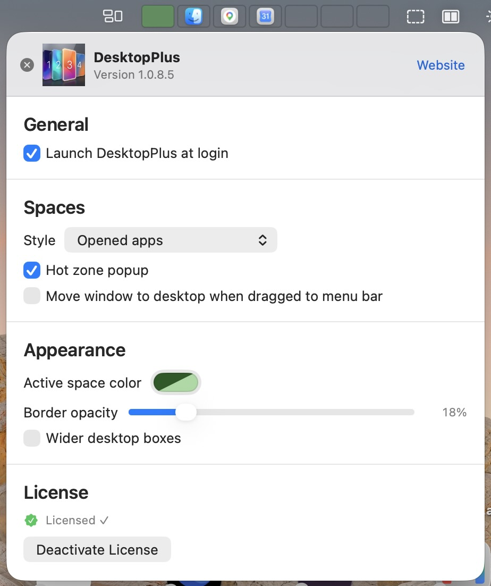

01Why Default macOS Spaces Breaks Flow
Virtual desktops (Spaces) are fantastic for separating code editors, browsers, chats, and design apps on any MacBook or external monitor. Yet Apple leaves out one crucial detail: macOS never tells you which Space you're on—or what's sitting on adjacent desktops.
Swipe Fatigue
Three- or four-finger trackpad swipes get tiring over an 8-hour day, and feel clunky with an external desk mouse.
Sequential Sliding
Ctrl + arrows force you to step through every Space in between—watching three animations just to jump from Desktop 1 to 4.
Context Blindness
Even with Ctrl + 1 shortcuts mapped, there's zero visual cue showing which number holds which apps until you trigger Mission Control.
02The Solution: DesktopPlus in 60 Seconds
DesktopPlus keeps your open Spaces visible in the top menu bar, shows what's running on each screen, and lets you jump directly with one click—while keeping native trackpad swipes intact. Built natively in Swift & SwiftUI (zero Electron bloat) for macOS 15.0+.
DesktopPlus for macOS
Menu bar Space indicator, Workspace App Presets, Recent Apps, and 1-click Residual Process cleanup. 14-day free trial (all unlocked, no card), then one-time purchase.
Install the Apple-Notarized Disk Image
Download DesktopPlus.dmg and drag DesktopPlus.app into /Applications. Signed and notarized by Apple—zero Gatekeeper workarounds.
Grant Accessibility Permission
Open DesktopPlus via Spotlight (Cmd + Space) and enable it in System Settings > Privacy & Security > Accessibility so it can detect and switch Spaces safely.
Pick Your Style & Launch at Login
Click any Space in the menu bar to switch instantly, and toggle Launch DesktopPlus at login in Preferences.
034 Display Modes & Fine-Tuned Preferences
Match your menu bar density—especially around the MacBook notch—with four native indicator styles:
Rectangles & Numbers
Choose minimalist tiles, compact 1 2 3 labels for notch-friendly width, or framed Rectangles + Numbers for instant spatial scanning.
Opened Apps + Custom Polish
Show live app icons inside each desktop box, tune Active space color and Border opacity, or enable drag-to-menu-bar window moving.


By default, macOS shuffles your Spaces by most recent use. Open System Settings > Desktop & Dock > Mission Control and toggle OFF "Automatically rearrange Spaces based on most recent use" to preserve muscle memory.
04Workspace App Presets & Recent Apps (v1.0.8)
Workspace App Presets
Save snapshots of your currently open apps into reusable presets—restore an entire coding, design, or writing setup in one click.
Recent Apps Recovery
Accidentally quit an app? Reopen your most recently closed apps straight from the hot zone popover without digging through Spotlight.

05Built-In Task Manager & Residual Process Cleaner
Heavy browsers and IDEs often leave lingering background helper processes eating memory—especially noticeable on 8GB and 16GB Macs. DesktopPlus builds an Integrated Task Manager right into the popover: inspect apps grouped by desktop, monitor per-app and live System Memory, toggle Caffeinate or Sleep, and clear lingering Residual Processes with a single click.

06Apple Default vs. DesktopPlus
| Multitasking Feature | macOS Default | DesktopPlus (v1.0.8) |
|---|---|---|
| Active Space Indicator | Hidden | Always Visible in Menu Bar |
| Switching Speed | Sequential swipes / arrows | 1-Click Direct Jump + Swipes |
| Display Modes | N/A | Rectangles, Numbers, Combined & Opened Apps |
| Workspace App Presets | Manual launching | 1-Click Saved Snapshots |
| Task Manager & RAM | Activity Monitor only | Per-Desktop Apps, Recent Apps & Residual Cleaner |
| Architecture | WindowServer | Native Swift/SwiftUI • Apple Notarized |
07Frequently Asked Questions
Can you see which macOS Space you are on without opening Mission Control?
Apple doesn't include a menu bar Space indicator. With DesktopPlus, your active virtual desktops remain visible in the menu bar as Rectangles, Numbers, Rectangles + Numbers, or Opened Apps icons.
What are Workspace App Presets & Quick Launch?
Workspace App Presets let you snapshot your currently open apps into named presets and relaunch complete multi-app workflows with a single click whenever you switch projects.
Does DesktopPlus require disabling SIP, and is it verified by Apple?
No—DesktopPlus never requires disabling SIP, kernel extensions, or system tweaks. It's built natively in Swift/SwiftUI, signed with an Apple Developer ID, and Apple Notarized.
Which macOS versions and Macs are supported?
DesktopPlus requires macOS 15.0 (Sequoia) or later and runs natively on MacBook Neo, MacBook Air, MacBook Pro, and desktop Macs—both single-screen and multi-monitor.
Is DesktopPlus free or a subscription?
DesktopPlus includes a 14-day free trial with all features unlocked and no payment info required, followed by a simple one-time purchase—no recurring subscription.
Take Control of Your Mac Desktops Today
Free 14-day trial (all unlocked, no card), then a one-time purchase. Native Swift & SwiftUI for macOS 15.0+.